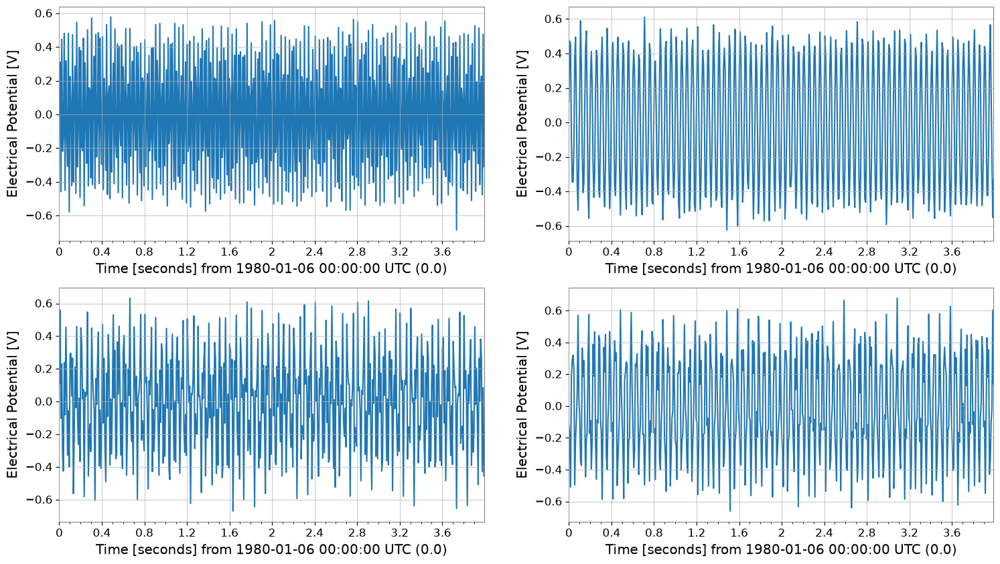
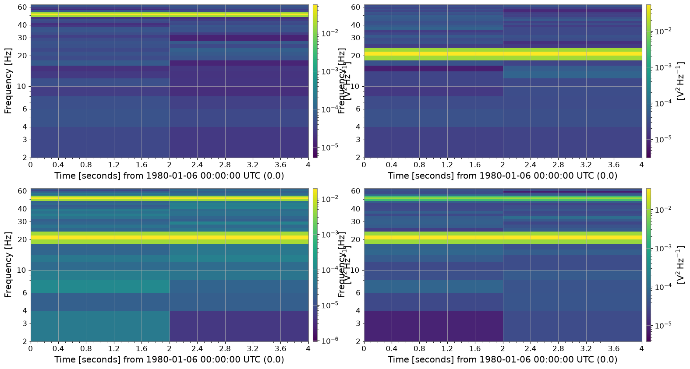
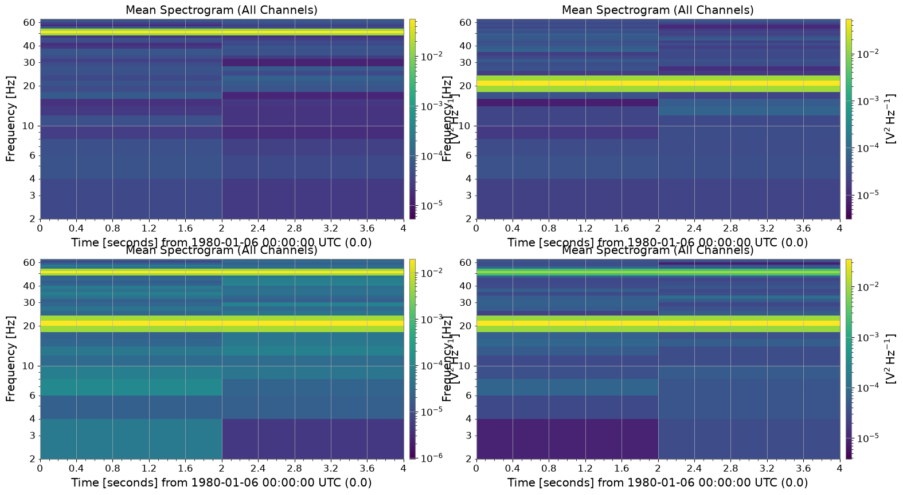
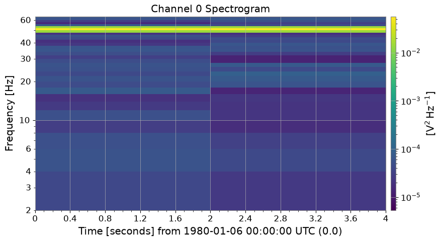
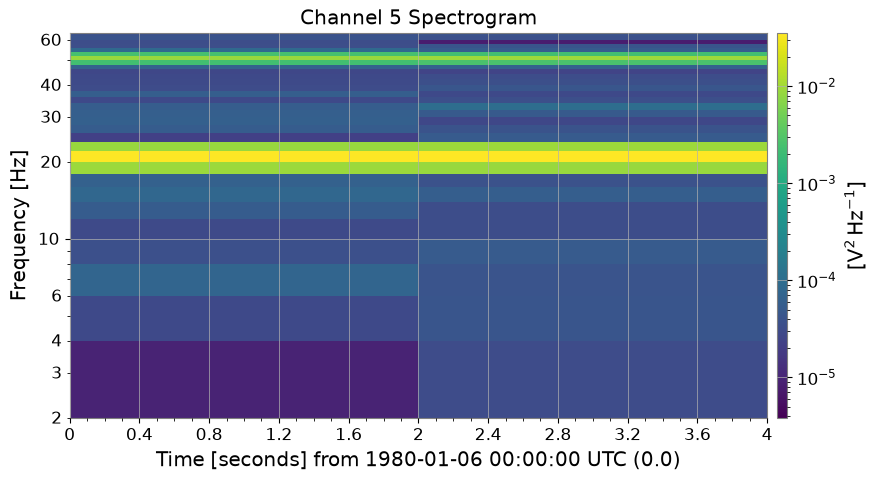

SpectrogramMatrix: 行列処理の基本#
このノートブックでは gwexpy の SpectrogramMatrix クラスの基本的な使い方を紹介します。
SpectrogramMatrix は、複数の gwpy.spectrogram.Spectrogram オブジェクトを 3次元 (Batch, Time, Frequency) の行列として効率的に扱うためのクラスです。numpy.ndarray を継承しており、高速な数値計算や PyTorch/CuPy との連携が可能です。
import warnings
warnings.filterwarnings("ignore", category=UserWarning)
warnings.filterwarnings("ignore", category=DeprecationWarning)
import astropy.units as u
import matplotlib.pyplot as plt
import numpy as np
from gwexpy.timeseries import TimeSeriesMatrix
# Fix random seed
np.random.seed(42)
1. データの準備#
rng = np.random.default_rng(0)
# Sample configuration
n = 512
dt = (1 / 128) * u.s
t0 = 0 * u.s
t = (np.arange(n) * dt).to_value(u.s)
tone50 = np.sin(2 * np.pi * 50 * t)
tone20 = np.sin(2 * np.pi * 20 * t + 0.3)
data = np.empty((2, 2, n), dtype=float)
data[0, 0] = 0.5 * tone50 + 0.05 * rng.normal(size=n)
data[0, 1] = 0.5 * tone20 + 0.05 * rng.normal(size=n)
data[1, 0] = 0.3 * tone50 + 0.3 * tone20 + 0.05 * rng.normal(size=n)
data[1, 1] = 0.2 * tone50 - 0.4 * tone20 + 0.05 * rng.normal(size=n)
units = np.full((2, 2), u.V)
names = [["ch00", "ch01"], ["ch10", "ch11"]]
channels = [["X:A", "X:B"], ["Y:A", "Y:B"]]
tsm = TimeSeriesMatrix(
data,
dt=dt,
t0=t0,
units=units,
names=names,
channels=channels,
rows={"r0": {"name": "row0"}, "r1": {"name": "row1"}},
cols={"c0": {"name": "col0"}, "c1": {"name": "col1"}},
name="demo",
)
display(tsm)
tsm.plot()
plt.show()
SeriesMatrix: shape=(2, 2, 512), name='demo'
- epoch: 0.0 s
- x0: 0.0 s, dx: 0.0078125 s, N_samples: 512
- xunit: s
Row Metadata
| name | channel | unit | |
|---|---|---|---|
| key | |||
| r0 | row0 | ||
| r1 | row1 |
Column Metadata
| name | channel | unit | |
|---|---|---|---|
| key | |||
| c0 | col0 | ||
| c1 | col1 |
Element Metadata
| unit | name | channel | row | col | |
|---|---|---|---|---|---|
| 0 | V | ch00 | X:A | 0 | 0 |
| 1 | V | ch01 | X:B | 0 | 1 |
| 2 | V | ch10 | Y:A | 1 | 0 |
| 3 | V | ch11 | Y:B | 1 | 1 |

2. SpectrogramMatrix の作成#
SpectrogramList の to_matrix() メソッドを使用すると、全てのスペクトログラムが一つの SpectrogramMatrix にスタックされます。 これにより、形状が (N, Time, Frequency) の3次元配列が得られます。
spec_matrix = tsm.spectrogram(2, fftlength=0.5, overlap=0.25)
print("Type:", type(spec_matrix))
print("Shape:", spec_matrix.shape) # (Batch, Time, Freq)
spec_matrix.plot();
Type: <class 'gwexpy.spectrogram.matrix.SpectrogramMatrix'>
Shape: (2, 2, 2, 33)

属性へのアクセス#
SpectrogramMatrix は元のスペクトログラムの時間軸や周波数軸の情報を保持しています。
print("Time axis (first 5):", spec_matrix.times[:5])
print("Freq axis (first 5):", spec_matrix.frequencies[:5])
print("Unit:", spec_matrix.unit)
Time axis (first 5): [0. 2.] s
Freq axis (first 5): [0. 2. 4. 6. 8.] Hz
Unit: V2 / Hz
3. 数値計算と統計#
SpectrogramMatrix は numpy.ndarray のサブクラスであるため、Numpy の関数をそのまま適用できます。 また、mean() などのメソッドも利用可能です。
例えば、全チャネル（バッチ方向）の平均スペクトログラムを計算してみましょう。
# Take the mean along axis=0 (Batch axis)
mean_spectrogram_data = spec_matrix.mean(axis=0)
print("Mean Data Shape:", mean_spectrogram_data.shape)
# The result is a 2D array of shape (Time, Freq)
Mean Data Shape: (2, 2, 33)
4. プロット#
plot() メソッドを使用すると、データを可視化できます。 3次元データ（Batch, Time, Freq）に対して plot() を呼び出すと、デフォルトではバッチ方向の平均がプロットされます。 これは複数のイベントの平均的な特徴を確認するのに便利です。
plot = spec_matrix.plot(title="Mean Spectrogram (All Channels)")
plt.show()

特定のチャネルだけをプロットしたい場合は、monitor 引数にインデックスを指定します。
# Plot the first channel (Channel_0)
plot0 = spec_matrix.plot(monitor=0, title="Channel 0 Spectrogram")
plot0.show()
# Plot the fifth channel (Channel_5)
plot5 = spec_matrix.plot(monitor=3, title="Channel 5 Spectrogram")
plot5.show()


5. 外部ライブラリとの連携#
機械学習やGPU計算のために、PyTorch や CuPy のテンソルへ簡単に変換できます。
# Conversion to PyTorch Tensor
try:
import torch
_ = torch
torch_tensor = spec_matrix.to_torch()
print("PyTorch Tensor:", type(torch_tensor))
print("Shape:", torch_tensor.shape)
except ImportError:
print("PyTorch is not installed.")
# Conversion to CuPy Array (if CUDA environment is available)
from gwexpy.interop import is_cupy_available
if is_cupy_available():
cupy_array = spec_matrix.to_cupy()
print("CuPy Array:", type(cupy_array))
print("Shape:", cupy_array.shape)
else:
pass
PyTorch is not installed.
まとめ#
SpectrogramMatrixはSpectrogramList.to_matrix()で作成できます。3次元配列
(Batch, Time, Freq)としてデータを保持します。mean()やplot()メソッドで、データの集約や可視化が簡単に行えます。to_torch()などでディープラーニングフレームワークへデータを渡す際の中間形式としても有用です。